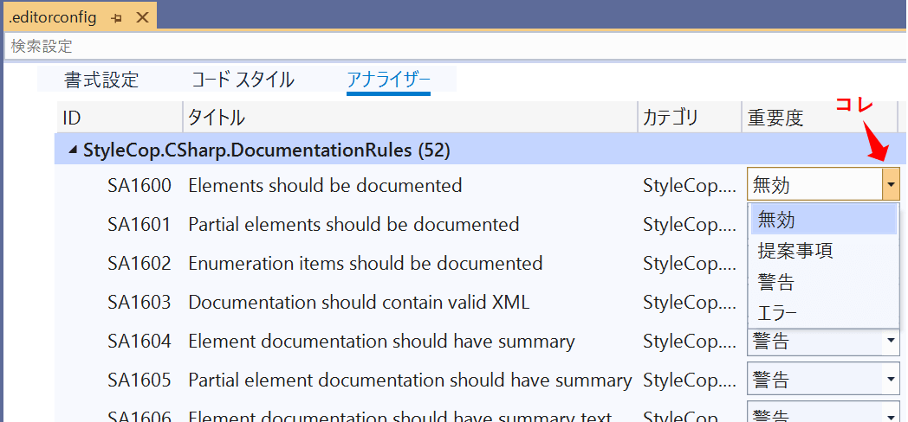

C#のコードスタイルチェックツールである「StyleCop Analyzers」のまとめです。
概要
StyleCop AnalyzersとはVisual Studioのツールで、C#のコードを分析し、コーディングルールから逸れた記述をリアルタイムに指摘してくれるものです。
書き方の統一ができるので、見た目が統一され読みやすいコードを書けるようになります。
また、チームでコーディングする際も導入することで、コードの書き方の個人差を減らすことができます。
StyleCop Analyzersはオープンソースです。
プロジェクトのURLは下記になります。
StyleCopAnalyzers
導入も簡単で、気軽に使用できます。
以降、StyleCop Analyzersの使い方についてまとめています。
準備
Visual StudioのNuGetからインストールしたら、すぐに使うことができます。
コーディングルールの編集はeditorconfigファイルで行います。
ファイルの追加方法は、ソリューションを右クリック→追加→新しい項目で、editorConfigファイル（規定）を追加します。

警告内容の確認
エラー一覧ウィンドウに警告が表示されます。
エラーコードをクリックすると、エラーの詳細ページに飛ぶことができます。

警告を出ないようにする
警告の種類はかなり多く、中には不要なものも存在します。
例えば、SA1200のエラーは、「Usingディレクティブは名前空間の中に書く」という指摘ですが、外に書いてあるものがほとんどで、Microsoftのデフォルトプロジェクトなどでも外に書いてあります。
（SA1200 Using directive should appear within a namespace declaration）
準備の項目で作った.editorconfigファイルをVisual Studio上で開くと、このような不要な警告を出なくすることができます。
個人的に無効にした方がよさげな警告
※適宜追加していきます。
- SA1101 クラスメンバの呼び出しには必ずthisをつける
- SA1200 Usingディレクティブは、名前空間宣言の中に記述
- SA1629 コメントの末尾にピリオドがない
- SA1633 ファイルのトップにファイルヘッダ（作者とか会社名とか書くやつ）がない
コメント（githubのアカウントが必要です）
Profile ---

やまっく
ソフト勉強中のハードエンジニアです。